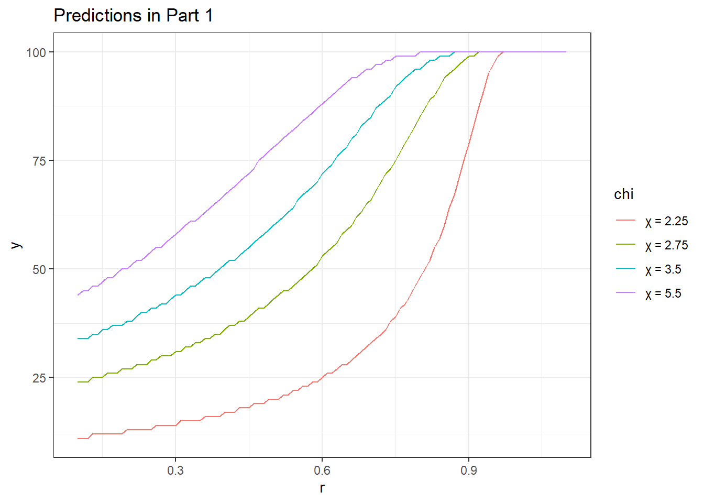
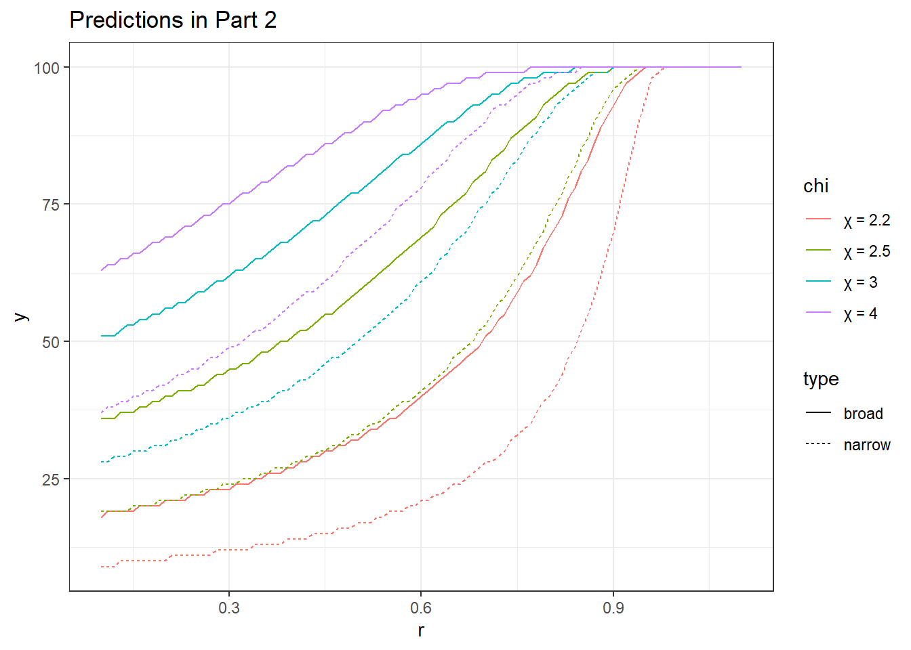
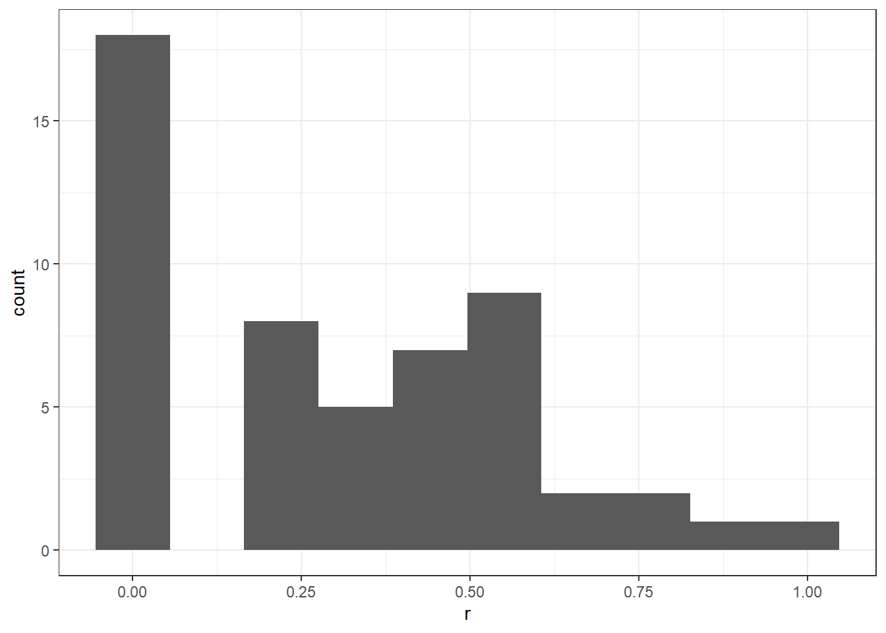
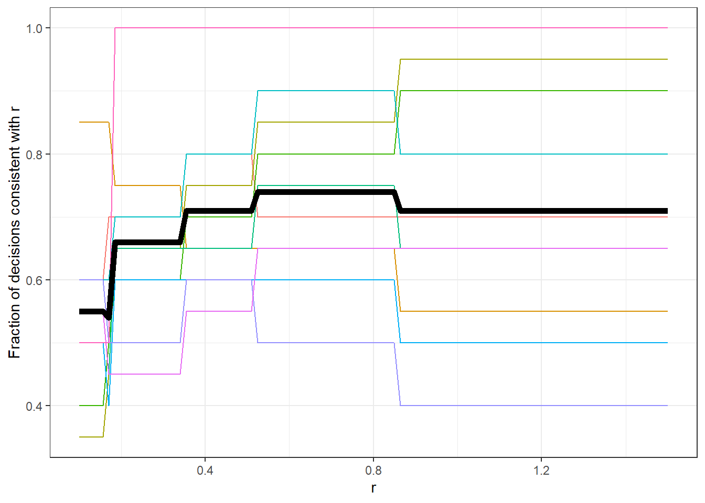

5 Anomalies with decision-making under risk
Our model sor far for decision-making under risk
Up to this point, we have studied the “standard” models of decision-making under risk:
Expected utility theory: People have utility of outcomes \(x\in\mathbb X\), \(u(x)\), and utilities over lotteries \(L\) that camn be computed as the expected utility of each outcome: \[ U(L)=E[u(X) \mid L] = \sum_{x\in\mathbb X}p(x)u(x) \] (assuming that \(\mathbb X\) is a discrete set).
Expected utility maximization can be motivated from the von Neumann-Morgenstern axioms:
- Completeness: For every combination of lotteries \(A\) and \(B\), either \(A \preceq B\) or \(A\succeq B\) (or both).
- *I am able to tell you whether I prefer \(A\) or \(B\), of if I am indifferent.
- Transitivity: If \(A\preceq B\) and \(B \preceq C\), then it must be that \(A\preceq C\).
- If I prefer \(B\) to \(A\), and I prefer \(C\) to \(B\), then I must prefer \(C\) to \(A\).
- Independence of irrelevant alternatives: If \(A\preceq B\), then \(tA+(1-t)C\preceq tB+(1-t)C\) for any \(t\in(0,1)\).
- If I prefer \(B\) to \(A\), and there are the following compound lotteries: \[ \begin{aligned} L_1&:\ \text{a } t\% \text{ chance of } A\text{ and a } 100(1-t)\% \text{ chance of C}\\ L_2&:\ \text{a } t\% \text{ chance of } B\text{ and a } 100(1-t)\% \text{ chance of C} \end{aligned} \] Then I must prefer \(L_2\) to \(L_1\). That is, \(L_1\) and \(L_2\) both share the same consequence \(C\) with the same probability \(1-t\), so it shou;d not matter what \(C\) is: it is an unavoidable risk.
Implications of expected utility theory
\[ U(L)=E[u(X) \mid L] = \sum_{x\in\mathbb X}p(x)u(x) \]
- I only care about the outcomes and their probabilities.
- There is no distinguishing between “losses” and “gains” relative to a reference point
- E.g.: If I prefer \(B\) to \(A\): \[A = \$2 \text{ for sure}, \ B = 50\% \text{ chance of } \$3, 50\% \text{ chance of } \$1\] Then I must also prefer \(\$3\) with the losses in \(B'\) to the losses in \(A'\)" \[A' = \$1 \text{ loss for sure}, \ B' = 50\% \text{ chance of no loss},\ 50\% \text{ chance of } \$2 \text{ loss}\] (the final outcomes are the same, and the probabilities are the same)
Implications of expected utility theory
\[ U(L)=E[u(X) \mid L] = \sum_{x\in\mathbb X}p(x)u(x) \]
Probabilities enter into the utility function linearly. I.e. expected utility is a linear function of probabilities.
Reduction of compound lotteries: I should be indifferent between the following two lotteries:
- Rolling a die, and getting paid $1 if the roll is a 6, $0 otherwise.
- Rolling a die. If the nubmer is 1, 2, 3, or 4, I receive $0, otherwise, I roll another die, and if that number is 1, 2, or 3, I receive $1. $0 otherwise.
Anomaly: Loss aversion
Kahneman, Daniel, Jack L. Knetsch, and Richard H. Thaler. “Anomalies: The endowment effect, loss aversion, and status quo bias.” Journal of Economic perspectives 5, no. 1 (1991): 193-206.
Abstract: A wine-loving economist we know purchased some nice Bordeaux wines years ago at low prices. The wines have greatly appreciated in value, so that a bottle that cost only $10 when purchased would now fetch $200 at auction. This economist now drinks some of this wine occasionally, but would neither be willing to sell the wine at the auction price nor buy an additional bottle at that price. Thaler (1980) called this pattern—the fact that people often demand much more to give up an object than they would be willing to pay to acquire it—the endowment effect. The example also illustrates what Samuelson and Zeckhauser (1988) call a status quo bias, a preference for the current state that biases the economist against both buying and selling his wine. These anomalies are a manifestation of an asymmetry of value that Kahneman and Tversky (1984) call loss aversion—the disutility of giving up an object is greater that the utility associated with acquiring it. This column documents the evidence supporting endowment effects and status quo biases, and discusses their relation to loss aversion.
Anomaly: reference points
Imagine that as part of your professional training you were assigned to a part-time job. The training is now ending and you must look for employment. You consider two possibilities. They are like your training job in most respects except for the amount of social contact and the convenience of commuting to and from work. To compare the two jobs to each other and to the present one you have made up the following table:
| Job | Contact | Commute |
|---|---|---|
| Present Job | isolated for long stretches | 10 min |
| Job A | limited contact with others | 20 min |
| Job A | moderartely sociable | 60 min |
70 % chose \(A\)
Anomaly: reference points
Imagine that as part of your professional training you were assigned to a part-time job. The training is now ending and you must look for employment. You consider two possibilities. They are like your training job in most respects except for the amount of social contact and the convenience of commuting to and from work. To compare the two jobs to each other and to the present one you have made up the following table:
| Job | Contact | Commute |
|---|---|---|
| Present Job | much pleasant social interaction | 80 min |
| Job A | limited contact with others | 20 min |
| Job B | moderartely sociable | 60 min |
33% chose \(A\).
Anomaly: reference points
In both cases they were choosing between \(A\) and \(B\), but the reference point mattered
| Job | Contact | Commute |
|---|---|---|
| Present Job 1 | Isolated for long stretches | 10 min |
| Present Job 2 | much pleasant social interaction | 80 min |
| Job A | limited contact with others | 20 min |
| Job B | moderartely sociable | 60 min |
Anomaly: reference points with risk
Tversky, Amos, and Daniel Kahneman. “The framing of decisions and the psychology of choice.” science 211, no. 4481 (1981): 453-458.
Decision (i): Chose between: \[ \text{(a) a sure gain of }\$240,\quad \text{(b) 25% chance to gain }\$1000,\ 75\% \text{ chance to gain nothing} \] Decision (ii): Choose between: \[ \text{(c) a sure loss of }\$750,\quad \text{(d) 75% chance to lose }\$1000,\ 25\% \text{ chance to lose nothing} \]
- The outcomes of the lotteries are independent.
- Choose either (a) or (b), and choose either (c) or (d).
- The outcome of both chosen lotteries will be added to your earnings.
(please tell me your choices)
Anomaly: reference points with risk
Decision (iii): Chose between: \[ \begin{aligned} &\text{(e) a 25% chance to gain }\$240 \text{ and a 75% chance to lose }\$760\\ &\text{(f) a 25% chance to gain }\$250 \text{and a 75% chance to gain lose } \$750 \end{aligned} \]
Anomaly: reference points with risk
Experiment 1 Decision (i): Chose between: \[ \text{(a) a sure gain of }\$240,\quad \text{(b) 25% chance to gain }\$1000,\ 75\% \text{ chance to gain nothing} \] Decision (ii): Choose between: \[ \text{(a) a sure loss of }\$750,\quad \text{(b) 75% chance to lose }\$1000,\ 25\% \text{ chance to lose nothing} \]
Experiment 2 Decision (iii): Chose between: \[ \begin{aligned} &\text{(e) a 25% chance to gain }\$240 \text{ and a 75% chance to lose }\$760\\ &\text{(f) a 25% chance to gain }\$250 \text{and a 75% chance to lose } \$750 \end{aligned} \]
73% of respondents chose (a) and (d) in Experiment 1. 100% of respondents in Experiment 2 chose (f)
Anomaly: reference points with risk
Two things are going on here:
People like \(\$1\) gains less than they dislike \(\$1\) losses. This could be explained by risk aversion if they were analyzing these decisions in isolation
People are evaluating each decision in isolation, and so are not thinking about the consequences of both choices combined. Narrow Bracketing
More narrow bracketing
Bland, James R. “How many games are we playing? An experimental analysis of choice bracketing in games.” Journal of Behavioral and Experimental Economics 80 (2019): 80-91.
Abstract Individuals who bracket decisions narrowly ignore the consequences of one decision when making another decision. Such behavior is well documented in experiments where subjects make decisions in the absence of strategic considerations. This paper uses an economic experiment to investigate whether people also bracket their decisions in games. Subjects played two Volunteer’s Dilemmas at the same time, with the payoffs from both games added to their earnings. Aggregate play in the game is not consistent with predictions made by assuming all subjects bracket either narrowly or broadly. On the individual level, structural modeling suggests that most subjects bracket narrowly in the game.
More narrow bracketing
My goal: design a task that: 1. Measures risk aversion 2. Measures whether someone brackets broadly or narrowly. 1. Only takes a short amount of time. It was the 2nd part of my experiment. I wanted to have some estimates of risk and bracketing behavior, but I wanted to have more time for the first part (I will show you this game after we study some game theory).
Task 1:
- You have 100 tokens. You have a chance of \(\frac{1}{2}\) (50%) to win [\(\chi\)] times the tokens you bet on the lottery, and a \(\frac12\) (50%) chance that these tokens are lost.
\[\chi\in\{2.25,2.75,3.50,5.50\} \]
Task 2:
- RED LOTTERY: You have 100 red tokens. You have a chance of \(\frac{1}{2}\) (50%) to win [\(\chi\)] times the tokens you bet on the lottery, and a \(\frac12\) (50%) chance that these tokens are lost.
- BLUE LOTTERY: You have 100blue tokens. You have a chance of \(\frac{1}{2}\) (50%) to win [\(\chi\)] times the tokens you bet on the lottery, and a \(\frac12\) (50%) chance that these tokens are lost.
\[\chi\in\{2.2, 2.5, 3.0, 4.0\} \]
More narrow bracketing
Assume expected utility maximization with \(u(x)=x^r\). Let \(y=\) amount invested.
Part 1 \[ \max_{y\in[0,100]}\left\{0.5(100-y+\chi y)^r+0.5(100-y)^r\right\} \] Part 2, assuming narrow bracketing (i.e. exact.ly the same as above) \[ \max_{y\in[0,100]}\left\{0.5(100-y+\chi y)^r+0.5(100-y)^r\right\} \]
Part 2, assuming broad bracketing \[ \max_{y\in[0,100]}\left\{0.25(200-2y+2\chi y)^r+0.5(200-2y+\chi y)^r+0.25(200-2y)^r\right\} \]


| Subject | invest | instance | Part | chi |
|---|---|---|---|---|
| 17 | 25 | 1 | Part 2 | 2.20 |
| 9 | 60 | 4 | Part 2 | 4.00 |
| 13 | 90 | 3 | Part 1 | 2.35 |
| 13 | 0 | 2 | Part 1 | 2.75 |
| 2 | 50 | 1 | Part 1 | 2.25 |
| 8 | 65 | 2 | Part 1 | 2.75 |
| 6 | 100 | 2 | Part 1 | 2.75 |
| 10 | 40 | 1 | Part 2 | 2.20 |
| 17 | 30 | 1 | Part 1 | 2.25 |
| 16 | 20 | 1 | Part 1 | 2.25 |
| 15 | 50 | 3 | Part 1 | 2.35 |
| 12 | 55 | 1 | Part 1 | 2.25 |
| 19 | 50 | 3 | Part 2 | 3.00 |
| 8 | 70 | 3 | Part 1 | 2.35 |
| 17 | 50 | 1 | Part 2 | 2.20 |
| 5 | 100 | 2 | Part 1 | 2.75 |
| 18 | 50 | 1 | Part 2 | 2.20 |
| 8 | 28 | 1 | Part 2 | 2.20 |
| 14 | 60 | 4 | Part 1 | 5.50 |
| 2 | 100 | 3 | Part 2 | 3.00 |
| 19 | 70 | 3 | Part 2 | 3.00 |
| 3 | 10 | 4 | Part 2 | 4.00 |
| 9 | 50 | 3 | Part 1 | 2.35 |
| 2 | 100 | 4 | Part 2 | 4.00 |
| 15 | 50 | 3 | Part 1 | 2.35 |
| 4 | 82 | 4 | Part 2 | 4.00 |
| 15 | 45 | 4 | Part 2 | 4.00 |
| 3 | 50 | 4 | Part 2 | 4.00 |
| 17 | 75 | 1 | Part 2 | 2.20 |
| 5 | 100 | 1 | Part 2 | 2.20 |
Narrow bracketing and self control
Suppose that you want to walk an average of 10,000 steps per day. Over the course of a week, your body does not care when you get those steps. You are human, and so you are lazy, so if you are not walking, you have an outside option of playing video games. Over the course of the week, your utility from walking for \(S\) minutes and playing \(V\) minutes of video games is \(U(S,V)\). Your long-term self wants to maximize this. However your short-term self on any day wants to maximize \(w(s,v)\). Suppose that you have time \(t\) available each day for walking or playing video games. Your budget constraint each day is:
- Budget constraint
- Optimal solution for the whole week
- “Lazy” solution for each day
- Setting a weekly step goal
- Setting a daily step goal
Probability weighting
\[ \text{Expected utility} = \sum_{k=1}^Kp_ku(x_k) \]
Up to this point, all of the departures from expected utility theory we have discussed are about how people treat monetary payoffs. We will now investigate a few departures in how people treat probabilities.
Estimating risk preference using many binary decisions
A common setup:
- Four fixed prizes: \(\{x_1,x_2,x_3,x_4\}\)
- Many choices between two lotteries characterized by probabilities of these prizes:
\[ q \text{ lottery: } \{q_1,q_2,q_3,q_4\},\quad p\text{ lottery: } \{p_1,p_2,p_3,p_4\} \]
Examples:
Hey, John D., and Chris Orme. “Investigating generalizations of expected utility theory using experimental data.” Econometrica: Journal of the Econometric Society (1994): 1291-1326.
Hey, John D. “Does repetition improve consistency?.” Experimental economics 4, no. 1 (2001): 5-54.
Harrison, Glenn W., and E. Elisabet Rutström. “Expected utility theory and prospect theory: One wedding and a decent funeral.” Experimental economics 12, no. 2 (2009): 133.
- Four fixed prizes: \(\{x_1,x_2,x_3,x_4\}\)
- Many choices between two lotteries characterized by probabilities of these prizes:
\[ q \text{ lottery: } \{q_1,q_2,q_3,q_4\},\quad p\text{ lottery: } \{p_1,p_2,p_3,p_4\} \] \[ EU_i^q=\sum_{k=1}^4q_ku_i(x_k),\quad EU_i^p=\sum_{k=1}^4p_ku_i(x_k) \]
If the prizes are fixed, but the probabilities are changing, perhaps we are learning a lot more about how people treat probabilities, than how they treat prizes.
What do data from these experiments look like?
Hey, John D. “Does repetition improve consistency?.” Experimental economics 4, no. 1 (2001): 5-54.
D<-read.csv("Hey2001.csv")
D %>% head() %>% knitr::kable("simple")| id | t | q1 | q2 | q3 | q4 | p1 | p2 | p3 | p4 | y |
|---|---|---|---|---|---|---|---|---|---|---|
| 1 | 1 | 0 | 0 | 0.875 | 0.125 | 0 | 0.125 | 0.000 | 0.875 | 0 |
| 1 | 2 | 0 | 0 | 0.875 | 0.125 | 0 | 0.125 | 0.000 | 0.875 | 0 |
| 1 | 3 | 0 | 0 | 0.875 | 0.125 | 0 | 0.125 | 0.500 | 0.375 | 1 |
| 1 | 4 | 0 | 0 | 0.875 | 0.125 | 0 | 0.375 | 0.000 | 0.625 | 0 |
| 1 | 5 | 0 | 0 | 0.875 | 0.125 | 0 | 0.375 | 0.125 | 0.500 | 1 |
| 1 | 6 | 0 | 0 | 0.875 | 0.125 | 0 | 0.375 | 0.250 | 0.375 | 1 |
- \(y=1\) if the \(q\)-lottery is chosen
- Prizes: \(\{0,50,100,150\}\) GBP
EU preferences: Assume \(u_i(x)=x^{r_i}\).
- Given \(r_i\), we can predict all 500 (!) choices person \(i\) made in the experiment.
- Which \(r_i\) makes the predictions that best match the data?
rgrid<-seq(0.01,1.10,length=100)
prizes<-c(0,50,100,150)
u<-c()
for (rr in 1:length(rgrid)) {
u<-rbind(u,prizes^rgrid[rr])
}
EU_r <-function(D) {
p<- D %>% select(p1:p4) %>% as.matrix()
q<- D %>% select(q1:q4) %>% as.matrix()
y<- D %>% select(y) %>% as.matrix()
EUq<-q %*% t(as.matrix(u))
EUp<-p %*% t(as.matrix(u))
ChooseQ<-1*(EUq>EUp)
NumPredicted<- colSums(ChooseQ == ( y %*% matrix(1,1,length(rgrid))))
mean(rgrid[which.max(NumPredicted)])
}
EU_r(D)## [1] 0.3292929For each person
idList<-unique(D$id)
r_EU<-c()
for (ii in 1:length(idList)) {r_EU[ii] <-EU_r(D %>% filter(id ==idList[ii]))}
ggplot(tibble(r_EU),aes(x=r_EU))+geom_histogram(bins=10)+theme_bw()+xlab("r")
Probability weighting
\[ \text{Expected utility} = \sum_{k=1}^Kp_ku(x_k) \]
What if utility is not linear in probabilities:

People still respond to probabilities, but the response is not linear
Simple example (just 2 outcomes): \[ \begin{aligned} p & =\Pr(\text{bad outcome})\\ w(p)&=\frac{p^\gamma}{(p^\gamma+(1-p)^\gamma)^{1/\gamma}}\\ \gamma = 1&\implies w(p)=p\\ \gamma<1&\implies \text{I under-weight likely outcomes, and over-weight unlikely outcomes}\\ \gamma>1&\implies \text{I over-weight likely outcomes, and under-weight unlikely outcomes} \end{aligned} \]
More thean 2 outcomes
- Add up probabilities from worst to best (cumulative probability) \(\to c\)
- Calculate \(w(c)\) for these cumulative probabilities.
- Behave as if the probabilities are the differences between these weights.
\[ \begin{aligned} c_k&=\sum_{j=1}^kp_k\\ w_k(c)&=\frac{c_k^\gamma}{(c_k^\gamma+(1-c_k)^\gamma)^{1/\gamma}}\\ U&=\sum_{k=1}^K\left[w(c_k)-w(c_{k-1})\right]u_i(x_k) \end{aligned} \]
Rank-dependent expected utility
- (regular) expected utility is a special case (\(\gamma=1\))
- Still a weighted sum of utilities of money, but weighting is different (implies that more money is still better)
- If the probability of the best prize increases, I will still be happier
rgrid<-seq(0.01,1.10,length=101)
ggrid<-seq(0.3,2,length=101)
prizes<-c(0,50,100,150)
u<-c()
for (rr in 1:length(rgrid)) {
u<-rbind(u,prizes^rgrid[rr])
}
RDEU_rg <-function(D) {
p<- D %>% select(p1:p4) %>% as.matrix()
q<- D %>% select(q1:q4) %>% as.matrix()
y<- D %>% select(y) %>% as.matrix()
cp<-t(apply(p,1,FUN=cumsum))
cq<-t(apply(q,1,FUN=cumsum))
tmp<-tibble()
for (gg in ggrid) {
wp<-cp^gg/(cp^gg+(1-cp^gg))^(1/gg)
wq<-cq^gg/(cq^gg+(1-cq^gg))^(1/gg)
dwp<-wp
dwq<-wq
for (kk in 2:4) {
dwp[,kk]<-wp[,kk]-wp[,kk-1]
dwq[,kk]<-wq[,kk]-wq[,kk-1]
}
ChooseQ<-((dwq-dwp) %*% t(as.matrix(u)))>0
fracPredicted<-colMeans(ChooseQ == (y %*% matrix(1,1,length(rgrid))))
tmp<-tibble(rgrid,fracPredicted) %>% mutate(gamma=gg) %>% rbind(tmp)
}
tmp[which.max(tmp$fracPredicted),]
}Using all data at once:
## # A tibble: 1 x 3
## rgrid fracPredicted gamma
## <dbl> <dbl> <dbl>
## 1 0.326 0.849 0.98Each person individually:
idList<-unique(D$id)
library(latex2exp)
rg_RDEU<-tibble()
for (ii in 1:length(idList)) {rg_RDEU <-RDEU_rg(D %>% filter(id ==idList[ii])) %>% rbind(rg_RDEU)}
plt<-ggplot(rg_RDEU,aes(x=rgrid,y=gamma,size=fracPredicted))+geom_jitter(alpha=0.5)+theme_bw()+xlab(TeX("$r$"))+ylab(TeX("$\\gamma$"))+geom_vline(xintercept=1,linetype="dashed")+geom_hline(yintercept=1,linetype="dashed")